« Entre traditions et modernité — Berceau du Faso Danfani »
Pays : Burkina Faso
Région : Nando (Nouveau découpage)
Provinces : Boulkiemdé, Sanguié, Ziro
Départements : 28
Chef-lieu : Koudougou
Code ISO 3166-2 : BF-06 (Historique)
Gentilé : Nandolaise / Nandolais
Population : ~1 420 000 hab.
Ethnies dominantes : Gourounssi (Lyéla, Nuni), Mossi
Coordonnées (Koudougou) : 12°15'N, 2°22'O
Hydrographie : Bassin du Fleuve Mouhoun
Fuseau horaire : UTC+0
Indicatif téléphonique : +226
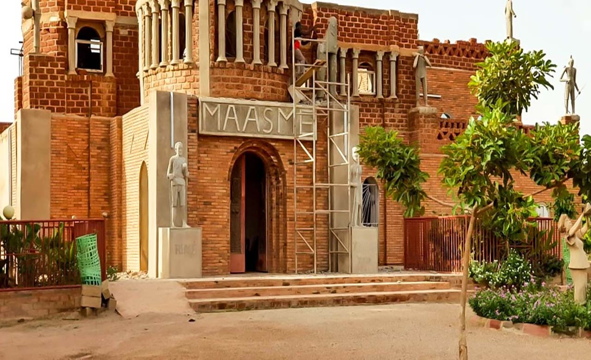
Présentation
Koudougou, surnommée la "Cité du Cavalier Rouge" pour ses terres latéritiques, est la troisième ville du Burkina Faso. C'est un carrefour industriel et culturel majeur entre Ouagadougou et Bobo-Dioulasso. La région est réputée pour son coton, son Université et son tissu associatif vibrant.
Nando, région émanant du réalignement territorial, s’impose comme un bastion majeur de la culture burkinabè. Elle regroupe trois provinces clés : le **Boulkiemdé**, le **Sanguié** (avec Réo pour chef-lieu), et le **Ziro** (capitale Sapouy). Ce territoire, au cœur du pays, se distingue par une identité culturelle forte, un dynamisme artistique remarquable et une richesse patrimoniale vivante.
Le nom “Nando”, d’origine gourounssi, signifie “ancien”. Il désignait autrefois la zone actuelle de Koudougou, considérée comme l’une des premières terres d’installation du peuple lyélé. L’expression populaire « Alla Nando », qui se traduit par « Je vais dans notre ancienne ville », témoigne de cet enracinement historique profond. Ce retour à l’appellation traditionnelle illustre la volonté de renforcer l’identité culturelle locale et de valoriser le patrimoine des peuples Gourounssi.
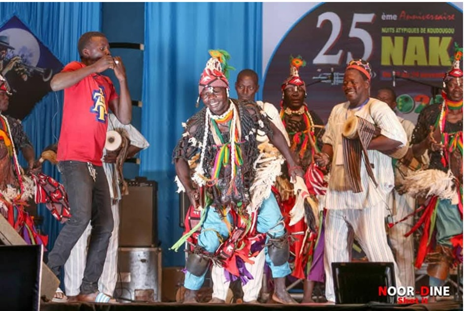
La région de Nando est une véritable plaque tournante culturelle. Ses festivals sont des vitrines vivantes de la créativité burkinabè. Chaque fin novembre, les Nuits Atypiques de Koudougou (NAK) attirent des milliers de festivaliers venus découvrir des spectacles de musique, théâtre, danse, arts visuels et artisanat. Ce rendez-vous, lancé en 1996, reste l’un des plus prestigieux du pays.
D’autres événements viennent enrichir ce paysage culturel : le Festirhuk dédié à l’humour, le Festival Gues Yiiga célébrant le mérite féminin en avril, le M’Bayiir Teedo (ex-Danfani Days) mettant en lumière le Faso Danfani, et le Festival Racines du Sanguié, organisé principalement à Réo pour valoriser les traditions ancestrales.
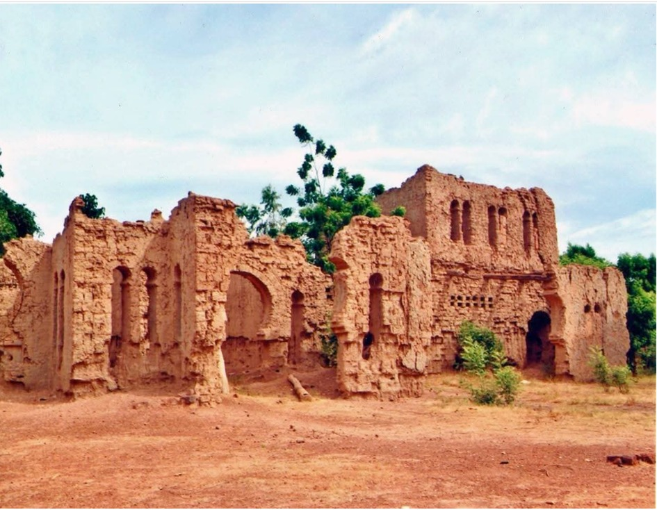
Nando est aussi le territoire des peuples Lyéla et Nuni, répartis respectivement dans les communes de Réo, Didyr, Dassa, Godyr, Kyon, Kordié, Ténado (pour les Lyéla) et dans les communes de Zawara et Pouni (pour les Nuni). Ces communautés sont les gardiennes de coutumes ancestrales qui s’expriment à travers des danses rituelles comme le Binon, des cérémonies traditionnelles, et des objets sacrés tels que les masques de Pouni.
Le mont Sanguié (point culminant situé dans le village de Sandié), ainsi que les grottes anthropiques du secteur 7, les maisons traditionnelles Gurunsi à motifs géométriques, et les collines sacrées de Poéssi et Sourgou, sont autant de sites spirituels et naturels phares du secteur.
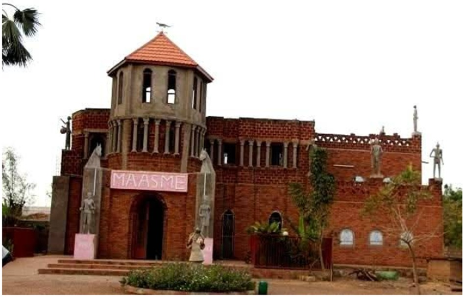
L’artisanat traditionnel est un pilier fort de l’économie culturelle locale. Les métiers du kokodunda, de la poterie, du cuir, de la bijouterie en bronze ou perles perdurent grâce aux savoirs transmis de génération en génération. Le patrimoine bâti complète cette richesse. La cathédrale Saint-Augustin de Koudougou, édifiée au XXe siècle, est un joyau architectural tandis que le palais royal d’Issouka symbolise la pérennité du pouvoir coutumier et de la chefferie traditionnelle gourounssi.
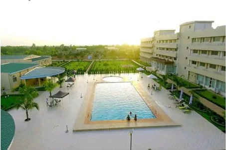
Tourisme & Culture
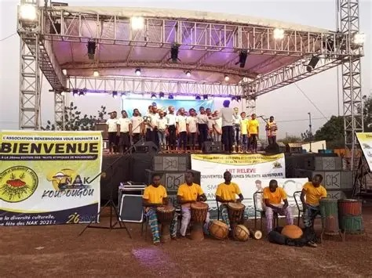
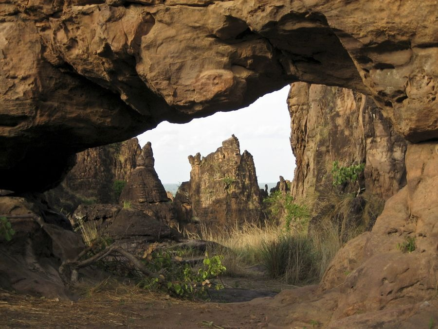
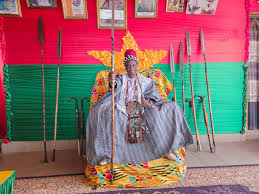
Ressources naturelles
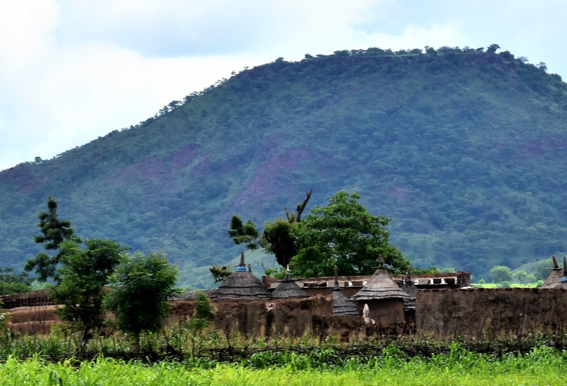
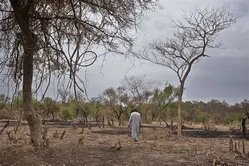
Potentiel agricole 🌾
Potentiel éducatif 🏫
Potentiel commercial 🛒
Artisanat traditionnel
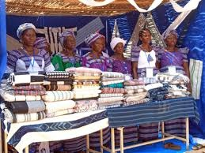
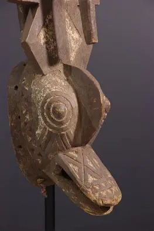
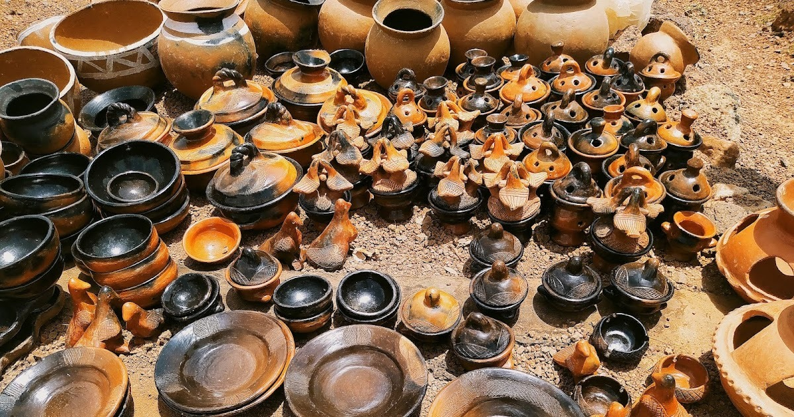
Carte de situation
Provinces